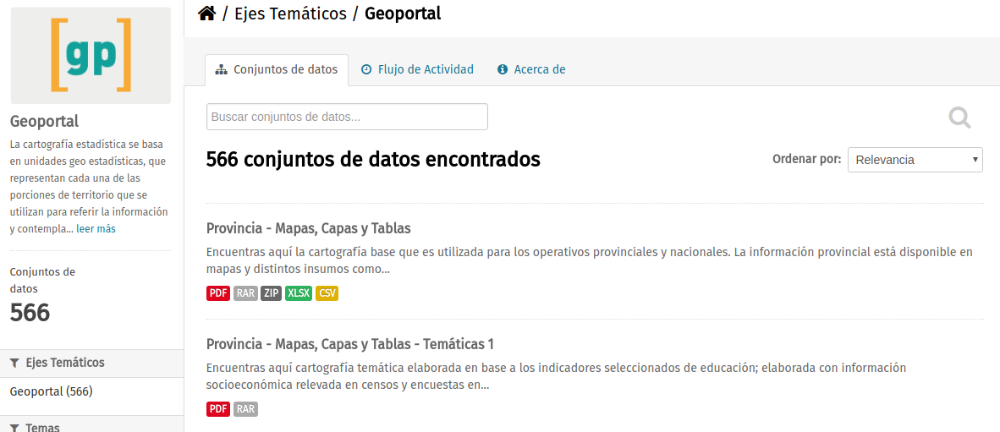

Recursos y ejemplos¶
Un caso muy interesante con un producto similar al buscado aquí se
hizo para las elecciones 2013 en Córdoba. Se realizó durante un
hackathon orgnizado por
OpenDataCordoba y se llamó
Democracia con códigos.

Mapas de base para reutilizar¶
Polígonos de los circuitos electorales de Córdoba aquí.

circuitos-cordoba
Polígos de las secciones electorales de Córdoba (Departamentos) aquí.
Desde el GeoPortal de la Provincia de Córdoba las localidades censales 2010. Lo mas aproximado para tener circuitos electorales de toda la Provincia de Córdoba Geolocalizados aquí. Copia local aquí. Versión pasada a CSV WKT localmente aquí.

geoportal